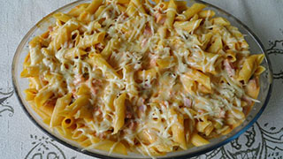

Macarrão com Requeijão
Rendimento: 6 porções

Ingredientes
500g de pene cozido al dente
2 colheres(sopa) de azeite
2 dentes de alho picado
1 lata de molho de tomate
200g de requeijão de sua prefêrencia
1 lata de creme de leite
300g de presunto picado
300g de mussarela picada
Queijo parmesão ralado
Sal e pimenta a gosto
Modo de preparo
- Em uma panela aqueça o azeite e doure o alho
- Junte o molho de tomate o requeijão e o creme de leite
- Tempere com sal e pimenta
- Deixe no fogo brando até o requeijão derreter
- Desligue o fogo e misture a mussarela o presunto picados
- Em um refrátario coloque o macarrão, despeje o molho e polvilhe o queijo ralado
- Deixe no forno pré-aquecido por 20 minutos
- Sirva em seguida
Voltar